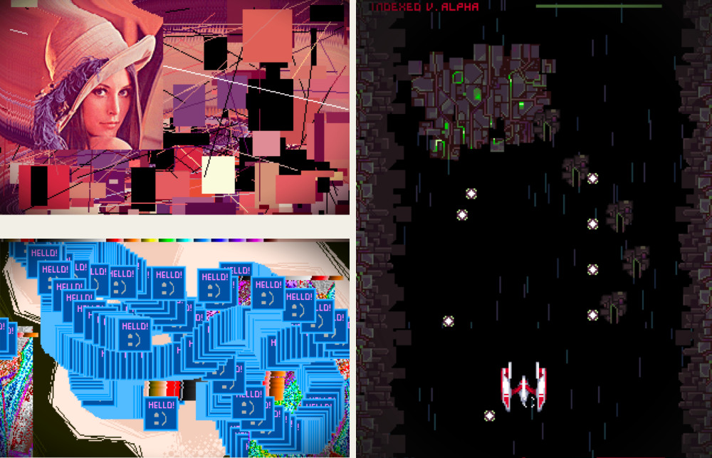
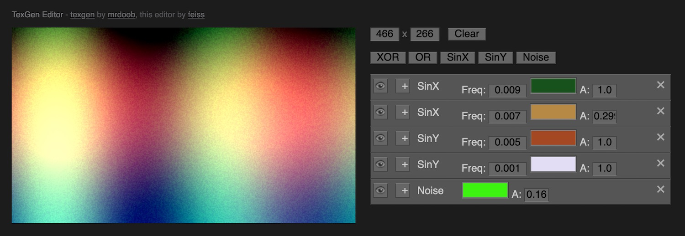
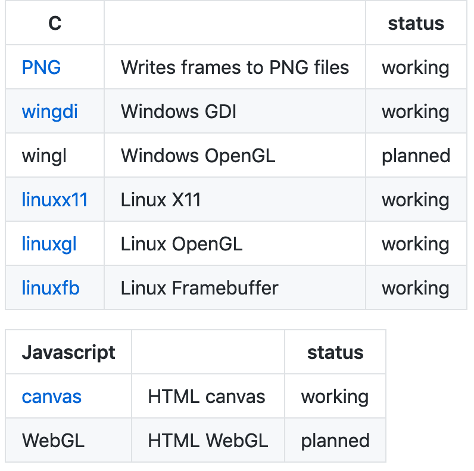
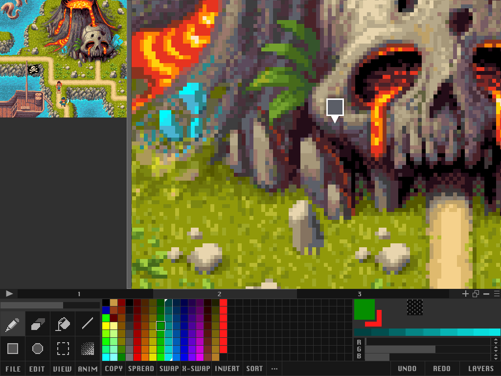
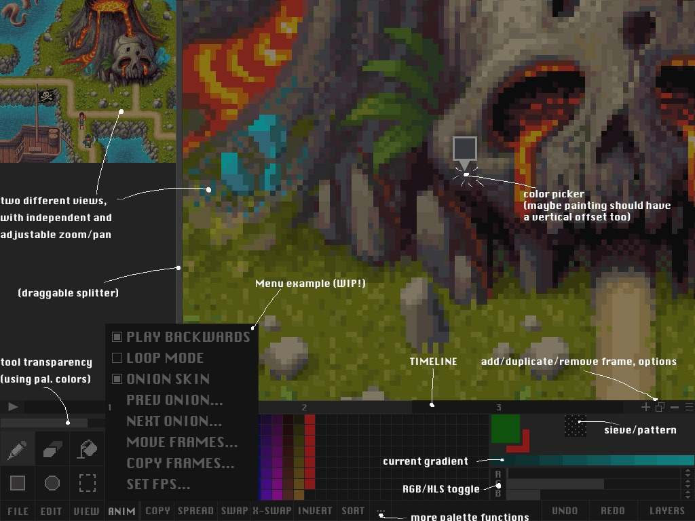

DIEGO F. GOBERNA
Tools
I love making tools, specially those that helps to create visual content.
Indexed JS Framework
One thing I really miss is the old MS-DOS Mode 13h, where you had direct access to the video memory and also could play with the 256 palette, making fancy effects like pallete cycling, changing/swapping colors, fade ins/outs..
I created this javascript framework for working in the same way, with canvas and GLSL support.
Pixel sorting
Tiny online tool to apply the pixel sorting effect to images.


Procedural 2D trees
The idea with this project was to generate simple trees for a 2D game with procedurally generated levels.
Animation/Sprite stack editor in 1024 Bytes
This is an unreleased JS1K entry, which is a dual tool. You paint in the canvas on the left in different layers (use the squares on the bottom to select the layer). The layers will be interpreted as both animation frames (middle thumbnail on the right) and as layers of a 3D object (preview at bottom right. This idea of "sprite stack" is fully exploited by rezoner in his spritestack app).
TexGen interface prototype
TexGen is a library made by Mr.Doob to generate and combine textures. I quickly mockup this interface to play with the library.
Zero libraries
Zero aims to be the solution to this common question: "How can I simply put a pixel on the screen?" by gathering different implementations, depending on the platform, language or technology you want to use, using a common and extremely simple API.
Current implementations:

Mockup for an iPad pixel editor
Pixel editors, a soft spot for me. I love using but also making them. This was a photoshop mockup of a prototype I had in mind.
 